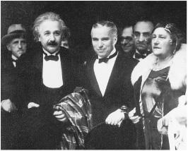
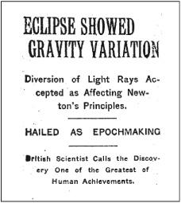
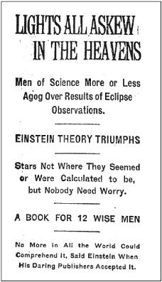

CHAPTER TWELVE
FAME 1919

With Charlie Chaplin and Elsa at the Hollywood premiere of City Lights, January 1931
“Lights All Askew”
Einstein’s theory of relativity burst into the consciousness of a world that was weary of war and yearning for a triumph of human transcendence. Almost a year to the day after the end of the brutal fighting, here was an announcement that the theory of a German Jew had been proven correct by an English Quaker. “Scientists belonging to two warring nations had collaborated again!” exulted the physicist Leopold Infeld. “It seemed the beginning of a new era.”1
The Times of London carried stories on November 7 about the defeated Germans being summoned to Paris to face treaty demands from the British and French. But it also carried the following triple-decked headline:
REVOLUTION IN SCIENCE
New Theory of the Universe
NEWTONIAN IDEAS OVERTHROWN
“The scientific concept of the fabric of the Universe must be changed,” the paper proclaimed. Einstein’s newly confirmed theory will “require a new philosophy of the universe, a philosophy that will sweep away nearly all that has hitherto been accepted.”2
The New York Times caught up with the story two days later.3 Not having a science correspondent in London, the paper assigned the story to its golf expert, Henry Crouch, who at first decided to skip the Royal Society announcement, then changed his mind, but then couldn’t get in. So he telephoned Eddington to get a summary and, somewhat baffled, asked him to repeat it in simpler words.4
Perhaps due to Eddington’s enthusiasm in the retelling, or due to Crouch’s enthusiasm in the reporting, Eddington’s appraisal of Einstein’s theory was enhanced to read “one of the greatest—perhaps the greatest—of achievements in the history of human thought.”5 But given the frenzy about to ensue, the headline was rather restrained:

The following day, the New York Times apparently decided that it had been too restrained. So it followed up with an even more excited story, its six-deck headline a classic from the days when newspapers knew how to write classic headlines:

For days the New York Times, with a bygone touch of merry populism, played up the complexity of the theory as an affront to common sense. “This news is distinctly shocking, and apprehensions for confidence even in the multiplication table will arise,” it editorialized on November 11. The idea that “space has limits” was most assuredly silly, the paper decided. “It just doesn’t, by definition, and that’s the end of it—for common folk, however it may be for higher mathematicians.” It returned to the theme five days later: “Scientists who proclaim that space comes to an end somewhere are under some obligation to tell us what lies beyond it.”
Finally, a week after its first story, the paper decided that some words of calm, more amused than bemused, might be useful. “British scientists seem to have been seized with something like an intellectual panic when they heard of photographic verification of the Einstein theory,” the paper pointed out, “but they are slowly recovering as they realize that the sun still rises—apparently—in the east and will continue to do so for some time to come.”6
An intrepid correspondent for the newspaper in Berlin was able to get an interview with Einstein in his apartment on December 2, and in the process launched one of the apocryphal tales about relativity. After describing Einstein’s top-floor study, the reporter asserted, “It was from this lofty library that he observed years ago a man dropping from a neighboring roof—luckily on a pile of soft rubbish—and escaping almost without injury. The man told Dr. Einstein that in falling he experienced no sensation commonly considered as the effect of gravity.” That was how, the article said, Einstein developed a “sublimation or supplement” of Newton’s law of gravity. As one of the stacked headlines of the article put it, “Inspired as Newton Was, But by the Fall of a Man from a Roof Instead of the Fall of an Apple.”7
This was, in fact, as the newspaper would say, “a pile of soft rubbish.” Einstein had done his thought experiment while working in the Bern patent office in 1907, not in Berlin, and it had not involved a person actually falling. “The newspaper drivel about me is pathetic,” he wrote Zangger when the article came out. But he understood, and accepted, how journalism worked. “This kind of exaggeration meets a certain need among the public.”8
There was, indeed, an astonishing public craving to understand relativity. Why? The theory seemed somewhat baffling, yes, but also very enticing in its mystery. Warped space? The bending of light rays? Time and space not absolute? The theory had the wondrous mix of Huh? and Wow! that can capture the public imagination.
This was lampooned in a Rea Irvin cartoon in the New Yorker, which showed a baffled janitor, fur-clad matron, doorman, kids, and others scratching their heads with wild surmise as they wandered down the street. The caption was a quote from Einstein: “People slowly accustomed themselves to the idea that the physical states of space itself were the final physical reality.” As Einstein put it to Grossmann, “Now every coachman and waiter argues about whether or not relativity theory is correct.”9
Einstein’s friends found themselves besieged whenever they lectured on it. Leopold Infeld, who later worked with Einstein, was then a young schoolteacher in a small Polish town. “At the time, I did what hundreds of others did all over the world,” he recalled. “I gave a public lecture on the theory of relativity, and the crowd that lined up on a cold winter night was so great that it could not be accommodated in the largest hall in town.”10
The same thing happened to Eddington when he spoke at Trinity College, Cambridge. Hundreds jammed the hall, and hundreds more were turned away. In his attempt to make the subject comprehensible, Eddington said that if he was traveling at nearly the speed of light he would be only three feet tall. That made newspaper headlines. Lorentz likewise gave a speech to an overflow audience. He compared the earth to a moving vehicle as a way to illustrate some examples of relativity.11
Soon many of the greatest physicists and thinkers began writing their own books explaining the theory, including Eddington, von Laue, Freundlich, Lorentz, Planck, Born, Pauli, and even the philosopher and mathematician Bertrand Russell. In all, more than six hundred books and articles on relativity were published in the first six years after the eclipse observations.
Einstein himself had the opportunity to explain it in his own words in The Times of London, which commissioned him to write an article called “What Is the Theory of Relativity?”12 The result was actually quite comprehensible. His own popular book on the subject, Relativity: The Special and General Theory, had first appeared in German in 1916. Now, in the wake of the eclipse observation, Einstein published it in English as well. Filled with many thought experiments that could be easily visualized, it became a best seller, with updated editions appearing over the ensuing years.
The Publicity Paradox
Einstein had just the right ingredients to be transformed into a star. Reporters, knowing that the public was yearning for a refreshing international celebrity, were thrilled that the newly discovered genius was not a drab or reserved academic. Instead, he was a charming 40-year-old, just passing from handsome to distinctive, with a wild burst of hair, rumpled informality, twinkling eyes, and a willingness to dispense wisdom in bite-sized quips and quotes.
His friend Paul Ehrenfest found the press attention rather ridiculous. “The startled newspaper ducks flutter up in a hefty bout of quacking,” he joked. To Einstein’s sister, Maja, who grew up at a time before people actually liked publicity, the attention was astonishing, and she assumed that he found it completely distasteful. “An article was published about you in a Lucerne paper!” she marveled, not fully appreciating that he had made front pages around the world. “I imagine this causes you much unpleasantness that so much is being written about you.”13
Einstein indeed bemoaned his newfound fame, repeatedly. He was being “hounded by the press and other riff-raff,” he complained to Max Born. “It’s so dreadful that I can barely breathe anymore, not to mention getting around to any sensible work.” To another friend, he painted an even more vivid picture of the perils of publicity: “Since the flood of newspaper articles, I’ve been so deluged with questions, invitations, and requests that I dream I’m burning in Hell and the postman is the Devil eternally roaring at me, hurling new bundles of letters at my head because I have not yet answered the old ones.”14
Einstein’s aversion to publicity, however, existed a bit more in theory than in reality. It would have been possible, indeed easy, for him to have shunned all interviews, pronouncements, pictures, and public appearances. Those who truly dislike the public spotlight do not turn up, as the Einsteins eventually would, with Charlie Chaplin on a red carpet at one of his movie premieres.
“There was a streak in him that enjoyed the photographers and the crowds,” the essayist C. P. Snow said after getting to know him. “He had an element of the exhibitionist and the ham. If there had not been that element, there would have been no photographers and no crowds. Nothing is easier to avoid than publicity. If one genuinely doesn’t want it, one doesn’t get it.”15
Einstein’s response to adulation was as complex as that of the cosmos to gravity. He was attracted and repelled by the cameras, loved publicity and loved to complain about it. His love-hate relationship with fame and reporters might seem unusual until one reflects on how similar it was to the mix of enjoyment, amusement, aversion, and annoyance that so many other famous people have felt.
One reason that Einstein—unlike Planck or Lorentz or Bohr—became such an icon was because he looked the part and because he could, and would, play the role. “Scientists who become icons must not only be geniuses but also performers, playing to the crowd and enjoying public acclaim,” the physicist Freeman Dyson (no relation to the Astronomer Royal) has noted.16 Einstein performed. He gave interviews readily, peppered them with delightful aphorisms, and knew exactly what made for a good story.
Even Elsa, or perhaps especially Elsa, enjoyed the attention. She served as her husband’s protector, fearsome in her bark and withering in her near-sighted gaze when unwanted intruders barged into his orbit. But even more than her husband, she reveled in the stature and deference that came with fame. She began charging a fee to photograph him, and she donated the money to charities that fed hungry children in Vienna and elsewhere.17
In the current celebrity-soaked age, it is hard to recall the extent to which, a century ago, proper people recoiled from publicity and disdained those who garnered it. Especially in the realm of science, focusing on the personal seemed discordant. When Einstein’s friend Max Born published a book on relativity right after the eclipse observations, he included, in his first edition, a frontispiece picture of Einstein and a short biography of him. Max von Laue and other friends of both men were appalled. Such things did not belong in a scientific book, even a popular one, von Laue wrote Born. Chastened, Born left these elements out of the next edition.18
As a result, Born was dismayed when it was announced in 1920 that Einstein had cooperated on a forthcoming biography by a Jewish journalist, Alexander Moszkowski, who had mainly written humor and occult books. The book advertised itself, in the title, as being based on conversations with Einstein, and in fact it was. During the war, the gregarious Moszkowski had befriended Einstein, been solicitous of his needs, and brought him into a semiliterary circle that hung around at a Berlin café.
Born was a nonpracticing Jew eager to assimilate into German society, and he feared that the book would stoke the simmering antiSemitism. “Einstein’s theories had been stamped as ‘Jewish physics’ by colleagues,” Born recalled, referring to the growing number of German nationalists who had begun decrying the abstract nature and supposed moral “relativism” inherent in Einstein’s theories. “And now a Jewish author, who had already published several books with frivolous titles, came along and wanted to write a similar book on Einstein.” So Born and his wife, Hedwig, who never shied from berating Einstein, launched a crusade with their friends to stop its publication.
“You must withdraw permission,” Hedwig hectored, “at once and by registered letter.” She warned him that the “gutter press” would use it to tarnish his image and portray him as a self-promoting Jew. “A completely new and far worse wave of persecution will be unleashed.” The sin, she emphasized, was not what he said but the fact that he was permitting any publicity for himself:
If I did not know you well, I would certainly not concede innocent motives under these circumstances. I would put it down to vanity. This book will constitute your moral death sentence for all but four or five of your friends. It could subsequently be the best confirmation of the accusation of self-advertisement.19
Her husband weighed in a week later with a warning that all of Einstein’s anti-Semitic antagonists “will triumph” if he did not block publication. “Your Jewish ‘friends’ [i.e., Moszkowski] will have achieved what a pack of anti-Semites have failed to do.”
If Moszkowski refused to back off, Born advised Einstein to get a restraining order from the public prosecutor’s office. “Make sure this is reported in the newspapers,” he said. “I shall send you the details of where to apply.” Like many of their friends, Born worried that Elsa was the one who was more susceptible to the lures of publicity. As he told Einstein, “In these matters you are a little child. We all love you, and you must obey judicious people (not your wife).”20
Einstein took the advice of his friends, up to a point, by sending Moszkowski a registered letter demanding that his “splendid” work not appear in print. But when Moszkowski refused to back down, Einstein did not invoke legal measures. Both Ehrenfest and Lorentz agreed that going to court would serve only to inflame the issue and make matters worse, but Born disagreed. “You can flee to Holland,” he said, referring to the ongoing effort by Ehrenfest and Lorentz to lure him there, but his Jewish friends who remained in Germany “would be affected by the stench.”21
Einstein’s detachment allowed him to affect an air of amusement rather than anxiety. “The whole affair is a matter of indifference to me, as is all the commotion, and the opinion of each and every human being,” he said. “I will live through all that is in store for me like an unconcerned spectator.”22
When the book came out, it made Einstein an easier target for antiSemites, who used it to bolster their contention that he was a self-promoter trying to turn his science into a business.23 But it did not cause much of a public commotion. There were, as Einstein noted to Born, no “earth tremors.”
In retrospect, the controversy over publicity seems quaint and the book harmless fluff. “I have browsed through it a little, and find it not quite as bad as I had expected,” Born later admitted. “It contains many rather amusing stories and anecdotes which are characteristic of Einstein.”24
Einstein was able to resist letting his fame destroy his simple approach to life. On an overnight trip to Prague, he was afraid that dignitaries or curiosity-seekers would want to celebrate him, so he decided to stay with his friend Philipp Frank and his wife. The problem was that they actually lived in Frank’s office suite at the physics laboratory, where Einstein had once worked himself. So Einstein slept on the sofa there. “This was probably not good enough for such a famous man,” Frank recalled, “but it suited his liking for simple living habits and situations that contravened social conventions.”
Einstein insisted that, on the way back from a coffeehouse, they buy food for dinner so that Frank’s wife need not go shopping. They chose some calf ’s liver, which Mrs. Frank proceeded to cook on the Bunsen burner in the office laboratory. Suddenly Einstein jumped up. “What are you doing?” he demanded.“Are you boiling the liver in water?” Mrs. Frank allowed that was indeed what she was doing. “The boiling-point of water is too low,” Einstein declared. “You must use a substance with a higher boiling-point such as butter or fat.” From then on, Mrs. Frank referred to the necessity of frying liver as “Einstein’s theory.”
After Einstein’s lecture that evening, there was a small reception given by the physics department at which several effusive speeches were made. When it was Einstein’s turn to respond, he instead declared, “It will perhaps be pleasanter and more understandable if instead of making a speech I play a piece for you on the violin.” He proceeded to perform a sonata by Mozart with, according to Frank, “his simple, precise and therefore doubly moving manner.”
The next morning, before he could depart, a young man tracked him down at Frank’s office and insisted on showing him a manuscript. On the basis of his E=mc2 equation, the man insisted, it would be possible “to use the energy contained within the atom for the production of frightening explosives.” Einstein brushed away the discussion, calling the concept foolish.25
From Prague, Einstein took the train to Vienna, where three thousand scientists and excited onlookers were waiting to hear him speak. At the station, his host waited for him to disembark from the first-class car but didn’t find him. He looked to the second-class car down the platform, and could not find him there either. Finally, strolling from the third-class car at the far end of the platform was Einstein, carrying his violin case like an itinerant musician. “You know, I like traveling first, but my face is becoming too well known,” he told his host. “I am less bothered in third class.”26
“With fame I become more and more stupid, which of course is a very common phenomenon,” Einstein told Zangger.27 But he soon developed a theory that his fame was, for all of its annoyances, at least a welcome sign of the priority that society placed on people like himself:
The cult of individual personalities is always, in my view, unjustified . . . It strikes me as unfair, and even in bad taste, to select a few for boundless admiration, attributing superhuman powers of mind and character to them. This has been my fate, and the contrast between the popular estimate of my achievements and the reality is simply grotesque. This extraordinary state of affairs would be unbearable but for one great consoling thought: it is a welcome symptom in an age, which is commonly denounced as materialistic, that it makes heroes of men whose ambitions lie wholly in the intellectual and moral sphere.28
One problem with fame is that it can engender resentment. Especially in academic and scientific circles, self-promotion was regarded as a sin. There was a distaste for those who garnered personal publicity, a sentiment that may have been exacerbated by the fact that Einstein was a Jew.
In the piece explaining relativity that he had written for The Times of London, Einstein humorously hinted at the issues that could arise. “By an application of the theory of relativity, today in Germany I am called a German man of science, and in England I am represented as a Swiss Jew,” he wrote. “If I come to be regarded as a bête noire, the descriptions will be reversed, and I shall become a Swiss Jew for the Germans and a German man of science for the English!”29
It was not entirely facetious. Just months after he became world famous, the latter phenomenon occurred. He was told that he was to be given the prestigious gold medal of Britain’s Royal Astronomical Society at the beginning of 1920, but a rebellion by a chauvinistic group of English purists forced the honor to be withheld.30 Far more ominously, a small but growing group in his native country soon began vocally portraying him as a Jew rather than as a German.
“Lone Traveler”
Einstein liked to cast himself as a loner. Although he had an infectious laugh, like the barking of a seal, it could sometimes be wounding rather than warm. He loved being in a group playing music, discussing ideas, drinking strong coffee, and smoking pungent cigars. Yet there was a faintly visible wall that separated him from even family and close friends.31 Starting with the Olympia Academy, he frequented many parlors of the mind. But he shied away from the inner chambers of the heart.
He did not like to be constricted, and he could be cold to members of his family. Yet he loved the collegiality of intellectual companions, and he had friendships that lasted throughout his life. He was sweet toward people of all ages and classes who floated into his ken, got along well with staffers and colleagues, and tended to be genial toward humanity in general. As long as someone put no strong demands or emotional burdens on him, Einstein could readily forge friendships and even affections.
This mix of coldness and warmth produced in Einstein a wry detachment as he floated through the human aspects of his world. “My passionate sense of social justice and social responsibility has always contrasted oddly with my pronounced lack of need for direct contact with other human beings and communities,” he reflected. “I am truly a ‘lone traveler’ and have never belonged to my country, my home, my friends, or even my immediate family, with my whole heart; in the face of all these ties, I have never lost a sense of distance and a need for solitude.”32
Even his scientific colleagues marveled at the disconnect between the genial smiles he bestowed on humanity in general and the detachment he displayed to the people close to him. “I do not know anyone as lonely and detached as Einstein,” said his collaborator Leopold Infeld. “His heart never bleeds, and he moves through life with mild enjoyment and emotional indifference. His extreme kindness and decency are thoroughly impersonal and seem to come from another planet.”33
Max Born, another personal and professional friend, noted the same trait, and it seemed to explain Einstein’s ability to remain somewhat oblivious to the tribulations afflicting Europe during World War I.“For all his kindness, sociability and love of humanity, he was nevertheless totally detached from his environment and the human beings in it.”34
Einstein’s personal detachment and scientific creativity seemed to be subtly linked. According to his colleague Abraham Pais, this detachment sprang from Einstein’s salient trait of “apartness,” which led him to reject scientific conventional wisdom as well as emotional intimacies. It is easier to be a nonconformist and rebel, both in science and in a militaristic culture like Germany’s, when you can detach yourself easily from others. “The detachment enabled him to walk through life immersed in thought,” Pais said. It also allowed him—or compelled him—to pursue his theories in both a “single-minded and single-handed” manner.35
Einstein understood the conflicting forces in his own soul, and he seemed to think it was true for all people. “Man is, at one and the same time, a solitary being and a social being,” he said.36 His own desire for detachment conflicted with his desire for companionship, mirroring the struggle between his attraction and his aversion to fame. Using the jargon of psychoanalysis, the pioneering therapist Erik Erikson once pronounced of Einstein, “A certain alternation of isolation and outgoingness seems to have retained the character of a dynamic polarization.”37
Einstein’s desire for detachment was reflected in his extramarital relationships. As long as women did not make any claims on him and he felt free to approach them or not according to his own moods, he was able to sustain a romance. But the fear that he might have to surrender some of his independence led him to erect a shield.38
This was even more evident in his relationship with his family. He was not always merely cold, for there were times, especially when it came to Mileva Mari , that the forces of both attraction and repulsion raged inside him with a fiery heat. His problem, especially with his family, was that he was resistant to such strong feelings in others. “He had no gift for empathy,” writes historian Thomas Levenson, “no ability to imagine himself into the emotional life of anyone else.”39 When confronted with the emotional needs of others, Einstein tended to retreat into the objectivity of his science.
, that the forces of both attraction and repulsion raged inside him with a fiery heat. His problem, especially with his family, was that he was resistant to such strong feelings in others. “He had no gift for empathy,” writes historian Thomas Levenson, “no ability to imagine himself into the emotional life of anyone else.”39 When confronted with the emotional needs of others, Einstein tended to retreat into the objectivity of his science.
The collapse of the German currency had caused him to urge Mari to move there, since it had become hard for him to afford her cost of living in Switzerland using depreciated German marks. But once the eclipse observations made him famous and more financially secure, he was willing to let his family stay in Zurich.
To support them, he had the fees from his European lecture trips sent directly to Ehrenfest in Holland, so that the money would not be converted into Germany’s sinking currency. Einstein wrote Ehrenfest cryptic letters referring to his hard currency reserves as “results which you and I obtained here on Au ions” (i.e., gold).40 The money was then disbursed by Ehrenfest to Mari and the children.
Shortly after his remarriage, Einstein visited Zurich to see his sons. Hans Albert, then 15, announced that he had decided to become an engineer.
“I think it’s a disgusting idea,” said Einstein, whose father and uncle had been engineers.
“I’m still going to become an engineer,” replied the boy.
Einstein stormed away angry, and once again their relationship deteriorated, especially after he received a nasty letter from Hans Albert. “He wrote me as no decent person has ever written their father,” he explained in a pained letter to his other son, Eduard. “It’s doubtful I’ll ever be able to take up a relationship with him again.”41
But Mari by then was intent on improving rather than undermining his relationship with his sons. So she emphasized to the boys that Einstein was “a strange man in many ways,” but he was still their father and wanted their love. He could be cold, she said, but also “good and kind.” According to an account provided by Hans Albert, “Mileva knew that for all his bluff, Albert could be hurt in personal matters—and hurt deeply.”42
By later that year, Einstein and his older son were again corresponding regularly about everything from politics to science. He also expressed his appreciation to Mari, joking that she should be happier now that she did not have to put up with him. “I plan on coming to Zurich soon, and we should put all the bad things behind us. You should enjoy what life has given you—like the wonderful children, the house, and that you are not married to me anymore.”43
Hans Albert went on to enroll at his parents’ alma mater, the Zurich Polytechnic, and became an engineer. He took a job at a steel company and then as a research assistant at the Polytechnic, studying hydraulics and rivers. Especially after he scored first in his exams, his father not only became reconciled, but proud. “My Albert has become a sound, strong chap,” Einstein wrote Besso in 1924. “He is a total picture of a man, a first-rate sailor, unpretentious and dependable.”
Einstein eventually said the same to Hans Albert, adding that he may have been right to become an engineer. “Science is a difficult profession,” he wrote.“Sometimes I am glad that you have chosen a practical field, where one does not have to look for a four-leaf clover.”44
One person who elicited strong and sustained personal emotions in Einstein was his mother. Dying from stomach cancer, she had moved in with him and Elsa at the end of 1919, and watching her suffer overwhelmed whatever human detachment he usually felt or feigned. When she died in February 1920, Einstein was exhausted by the emotions. “One feels right into one’s bones what ties of blood mean,” he wrote Zangger. Käthe Freundlich had heard him boast to her husband, the astronomer, that no death would affect him, and she was relieved that his mother’s death proved that untrue. “Einstein wept like other men,” she said, “and I knew that he could really care for someone.”45
The Ripples from Relativity
For nearly three centuries, the mechanical universe of Isaac Newton, based on absolute certainties and laws, had formed the psychological foundation of the Enlightenment and the social order, with a belief in causes and effects, order, even duty. Now came a view of the universe, known as relativity, in which space and time were dependent on frames of reference. This apparent dismissal of certainties, an abandonment of faith in the absolute, seemed vaguely heretical to some people, perhaps even godless. “It formed a knife,” historian Paul Johnson wrote in his sweeping history of the twentieth century, Modern Times, “to help cut society adrift from its traditional moorings.”46
The horrors of the great war, the breakdown of social hierarchies, the advent of relativity and its apparent undermining of classical physics all seemed to combine to produce uncertainty. “For some years past, the entire world has been in a state of unrest, mental as well as physical,” a Columbia University astronomer, Charles Poor, told the New York Times the week after the confirmation of Einstein’s theory was announced. “It may well be that the physical aspects of the unrest, the war, the strikes, the Bolshevist uprisings, are in reality the visible objects of some underlying deeper disturbance, worldwide in character. This same spirit of unrest has invaded science.”47
Indirectly, driven by popular misunderstandings rather than a fealty to Einstein’s thinking, relativity became associated with a new relativism in morality and art and politics. There was less faith in absolutes, not only of time and space, but also of truth and morality. In a December 1919 editorial about Einstein’s relativity theory, titled “Assaulting the Absolute,” the New York Times fretted that “the foundations of all human thought have been undermined.”48
Einstein would have been, and later was, appalled at the conflation of relativity with relativism. As noted, he had considered calling his theory “invariance,” because the physical laws of combined spacetime, according to his theory, were indeed invariant rather than relative.
Moreover, he was not a relativist in his own morality or even in his taste. “The word relativity has been widely misinterpreted as relativism, the denial of, or doubt about, the objectivity of truth or moral values,” the philosopher Isaiah Berlin later lamented. “This was the opposite of what Einstein believed. He was a man of simple and absolute moral convictions, which were expressed in all he was and did.”49
In both his science and his moral philosophy, Einstein was driven by a quest for certainty and deterministic laws. If his theory of relativity produced ripples that unsettled the realms of morality and culture, this was caused not by what Einstein believed but by how he was popularly interpreted.
One of those popular interpreters, for example, was the British statesman Lord Haldane, who fancied himself a philosopher and scientific scholar. In 1921, he published a book called The Reign of Relativity, which enlisted Einstein’s theory to support his own political views on the need to avoid dogmatism in order to have a dynamic society. “Einstein’s principle of the relativity of our measurements of space and time cannot be taken in isolation,” he wrote. “When its import is considered it may well be found to have its counterpart in other domains of nature and of knowledge generally.”50
Relativity theory would have profound consequences for theology, Haldane warned the archbishop of Canterbury, who immediately tried to comprehend the theory with only modest success. “The Archbishop,” one minister reported to the dean of English science, J. J. Thomson, “can make neither head nor tail of Einstein, and protests that the more he listens to Haldane, and the more newspaper articles he reads on the subject, the less he understands.”
Haldane persuaded Einstein to come to England in 1921. He and Elsa stayed at Haldane’s grand London townhouse, where they found themselves completely intimidated by their assigned footman and butler. The dinner that Haldane hosted in Einstein’s honor convened a pride of English intellectuals leonine enough to awe an Oxford senior common room. Among those present were George Bernard Shaw, Arthur Eddington, J. J. Thomson, Harold Laski, and of course the baffled archbishop of Canterbury, who got a personal briefing from Thomson in preparation.
Haldane seated the archbishop next to Einstein, so he got to pose his burning question directly to the source. What ramifications, His Grace inquired, did the theory of relativity have for religion?
The answer probably disappointed both the archbishop and their host. “None,” Einstein said. “Relativity is a purely scientific matter and has nothing to do with religion.”51
That was no doubt true. However, there was a more complex relationship between Einstein’s theories and the whole witch’s brew of ideas and emotions in the early twentieth century that bubbled up from the highly charged cauldron of modernism. In his novel Balthazar, Lawrence Durrell had his character declare, “The Relativity proposition was directly responsible for abstract painting, atonal music, and formless literature.”
The relativity proposition, of course, was not directly responsible for any of this. Instead, its relationship with modernism was more mysteriously interactive. There are historical moments when an alignment of forces causes a shift in human outlook. It happened to art and philosophy and science at the beginning of the Renaissance, and again at the beginning of the Enlightenment. Now, in the early twentieth century, modernism was born by the breaking of the old strictures and verities. A spontaneous combustion occurred that included the works of Einstein, Picasso, Matisse, Stravinsky, Schoenberg, Joyce, Eliot, Proust, Diaghilev, Freud, Wittgenstein, and dozens of other path-breakers who seemed to break the bonds of classical thinking.52
In his book Einstein, Picasso: Space,Time, and the Beauty That Causes Havoc, the historian of science and philosophy Arthur I. Miller explored the common wellsprings that produced, for example, the 1905 special theory of relativity and Picasso’s 1907 modernist masterpiece Les Demoiselles d’Avignon. Miller noted that both were men of great charm “yet who preferred emotional detachment.” Each in his own way felt that something was amiss in the strictures that defined his field, and they were both intrigued by discussions of simultaneity, space, time, and specifically the writings of Poincaré.53
Einstein served as a source of inspiration for many of the modernist artists and thinkers, even when they did not understand him. This was especially true when artists celebrated such concepts as being “free from the order of time,” as Proust put it in the closing of Remembrance of Things Past. “How I would love to speak to you about Einstein,” Proust wrote to a physicist friend in 1921. “I do not understand a single word of his theories, not knowing algebra. [Nevertheless] it seems we have analogous ways of deforming Time.”54
A pinnacle of the modernist revolution came in 1922, the year Einstein’s Nobel Prize was announced. James Joyce’s Ulysses was published that year, as was T. S. Eliot’s The Waste Land. There was a midnight dinner party in May at the Majestic Hotel in Paris for the opening of Renard, composed by Stravinsky and performed by Diaghilev’s Ballets Russes. Stravinsky and Diaghilev were both there, as was Picasso. So, too, were both Joyce and Proust, who “were destroying 19th century literary certainties as surely as Einstein was revolutionizing physics.” The mechanical order and Newtonian laws that had defined classical physics, music, and art no longer ruled.55
Whatever the causes of the new relativism and modernism, the untethering of the world from its classical moorings would soon produce some unnerving reverberations and reactions. And nowhere was that mood more troubling than in Germany in the 1920s.